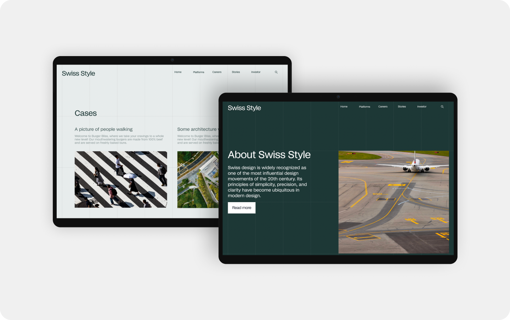
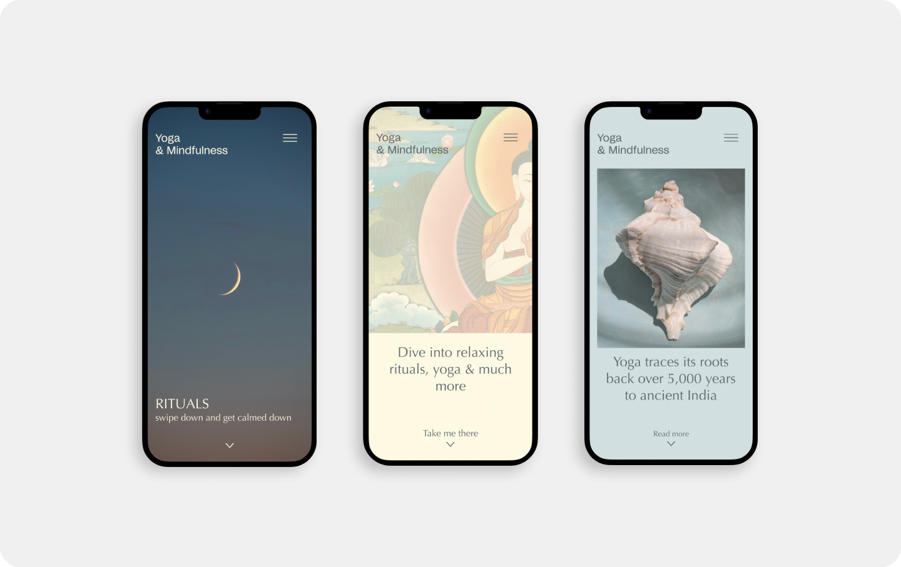

Fie Grøndahl Kornerup
Multimediedesigner, Københavns Erhvervsakademi
om mig
portfolio
hjem
Velkommen til mit portfolio website. Her får du et overblik
over de temaer jeg har været igennem på 1. semester
af multimediedesign på Københavns Erhervsakademi.

02 WEB Min første kodede hjemmeside

03 UX-UI Min første hjemmeside om selvvalgt emne
Se alle projekter →